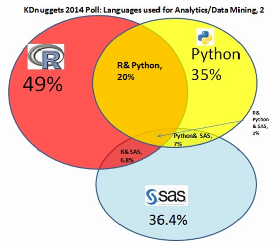

Data Science Rosetta Stone
Information
Motivation
Why create a Rosetta Stone for Data Science programming languages?
It's a valid question, one that I think is best answered by considering another question:
What programming language should I learn to get a machine learning or data science job? (KD Nuggets, 2017)
It's referred to as the "silver bullet question" (KD Nuggets, 2017) because clearly it's answered on a case-by-case basis. Are you working with statisticians? engineers? physicists? In each of these cases, the answer to this question will be different.
Moreover, in an academic or industry setting, you will always have access to the resources to learn a programming language that you may not already know. You aren't expected to know all the programming languages, and produce the best data visualizations. You are expect to know what you know, know what you don't know, and learn what you need to know.
It is my opinion, therefore, that just knowing one programming language is sufficient to get a job in Data Science. Sure, there are some organizations that require experience in this language or that language. But, as my computer science professor, Dr. Gary Bishop, said in class one day, "When asked in an interview if you know Programming Language A, the answer is always 'Yes!', because if you know one language, you know how to program, and if you know how to program, you can always learn a new programming language."
Data
To share a little bit of data with you (because I can assume if you've found this resource, data and analysis of data are important to you), in a 2014 KD Nuggets Poll, 49% of responders reported using R, compared to 36.4% using SAS, and 35% using Python. The next highest was 30.6% reported using SQL (which can be used in Python, SAS, and R). In a similar poll, responders were asked about their "primary programming language for analytics, data mining, data science tasks." In 2015, 51% reported R as their primary language, compared to Python at 29% and "Other", including SAS, at 17%. Also, I think it is interesting to see that only 2% of responders from the 2014 poll reported using all 3 languages.
Moreover, if you're here because you believe that learning a programming language for data science will increase your salary potential, then you're in luck! A 2014 USA Today article reported that a data analyst that knows how to program in SAS, can earn "17% more than an analyst without that skill!" Also, a 2016 Time Money article indicates that SAS programming produces an average pay boost of 6.1%, while general data mining/data warehousing offers 5.1%, and data modeling provides 5%.
Goals
My first main goal in producing this resource was to highlight the commonalities between a few different programming languages in completing Data Science tasks. What I found was that the functionality in these different languages is often similar, if not exactly the same. I found some languages to be better than others in certain cases, but didn't find one to be superior.
My second main goal was to make a resource accessible to students, educators, researchers, new & seasoned data scientists, etc., who were interested in either (1) learning a programming language for Data Science without prior knowledge of programming and (2) learning a programming language for Data Science, already knowing another language.
Other smaller goals included:
- Reproducible: It is really important to me that all examples included in these tutorials are reproducible. I made an effort to make the data accessible, and to include all the code I used in the examples to produce the results displayed in the tutorial. That being said, if you find any of the examples in the tutorial do not produce the results displayed, please let me know.
- Quick access to short examples of commonly used tools: I don't think I am the only one who has ever Googled "How do I make a histogram in Python?", or something similar. And, I also don't think I am the only one who gets frustrated reading through a long tutorial when all I wanted to do was learn how to make a histogram. In order to address these concerns, I sought to create self-contained examples that were easily accessible through a Table of Contents.
- Basic enough for a beginner: We've all been a beginner at some point, possibly trying to figure out just how to get started on a code script. It is my intention that these tutorials are basic enough that they are beginner-friendly, and explain some of the basic lingo of a programming language, and how to get started. If you find there is something not included here that would be helpful, again, please let me know.
- Advanced enough to include some machine learning: Machine learning is a hot topic of data science and statistics right now. I hope that theses tutorials are also advanced enough that they can provide some direction into using machine learning models. However, there is a caveat: These tutorials do not explain the motivations, assumptions, and use cases of each particular model used, but rather only demonstrate there use. Please be sure you understand these models before using in accordance with ethical data science. If you have any comments on my uses, please let me know.
- Links to more resources: Maybe neural network models in SAS is all you're really interested in, and you want to learn all you can about the different options and settings for these models. If so, you won't find all you are looking for in these tutorials, but you will find an example, and below that, links to the documentation on that particular procedure, function, code, etc.
- Able to be modified: To the extent possible, I will be updating, modifying, and adding to the code in these tutorials. But this is mainly where you come in to play. If there is something you would like to see in these tutorials, either because you are wondering, you know the answer, or you think it would make the tutorial more complete, please let me know!
Code License
MIT License
Copyright (c) 2018 Elaine Kearney
Permission is hereby granted, free of charge, to any person obtaining a copy of this software and associated documentation files (the "Software"), to deal in the Software without restriction, including without limitation the rights to use, copy, modify, merge, publish, distribute, sublicense, and/or sell copies of the Software, and to permit persons to whom the Software is furnished to do so, subject to the following conditions:
The above copyright notice and this permission notice shall be included in all copies or substantial portions of the Software.
THE SOFTWARE IS PROVIDED "AS IS", WITHOUT WARRANTY OF ANY KIND, EXPRESS OR IMPLIED, INCLUDING BUT NOT LIMITED TO THE WARRANTIES OF MERCHANTABILITY, FITNESS FOR A PARTICULAR PURPOSE AND NONINFRINGEMENT. IN NO EVENT SHALL THE AUTHORS OR COPYRIGHT HOLDERS BE LIABLE FOR ANY CLAIM, DAMAGES OR OTHER LIABILITY, WHETHER IN AN ACTION OF CONTRACT, TORT OR OTHERWISE, ARISING FROM, OUT OF OR IN CONNECTION WITH THE SOFTWARE OR THE USE OR OTHER DEALINGS IN THE SOFTWARE.